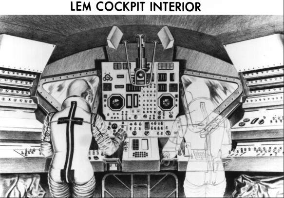

The lunar module's interior was as different from that of other manned spacecraft as its exterior. And it also took two years to design. A home on the moon required some very special features besides visibility: equipment and procedures for rendezvous and docking, environmental control for living, an easy means for leaving and reentering while on the moon, and the capability of operating in a low-gravity or no-gravity environment.10
With an internal volume of 60 cubic meters, the lunar module would be the largest American spacecraft yet developed. It would also be the most spacious, except for the command module when the pilot was there alone. To lessen already formidable crew training demands, Houston pressed Grumman to make the cabin instruments and displays as similar as possible to those of the command module. Complete duplication was impossible, however, because the two craft were so unlike. Ground rules were laid down governing the degree of redundancy required in controls and panels. Although these controls would be duplicated on each side of the cockpit, some of the instrument displays would have to be shared by the crewmen. Above all, Grumman was told, the spacecraft must be designed so that the hover and touchdown could be flown manually and so that no single failure of the controls or displays could cause a mission abort.11
Because the lunar module was a means of transportation, as well as shelter and living quarters for the crew while on the moon, cockpit design presented interesting problems to human factor engineers. The man-machine interface embraced such items as stowage of space suits and personal equipment and room for the pilots to move about within the cabin. In a mockup in mid-1964, two crewmen demonstrated that they could put on and take off their portable life support systems with suits either pressurized or deflated, reach for and attach umbilical hoses, and recharge their backpacks. The MSC Crew Systems Division drew up a document governing spacecraft-spacesuit interface and change procedures. This was used by NASA to supplement spacecraft specifications and interface control documents. It was also an important managerial tool between Grumman and North American and their major associates, MIT and Hamilton Standard (developers of the guidance and navigation system and the life support system).12
The astronauts were an essential "subsystem" on the lunar module, and they were very much in evidence at Bethpage, as well as at Downey, where they helped in the design of the command module. Scott Carpenter, Charles Conrad, and Donn F. Eisele drew the lunar module as their special assignment, and William F. Rector, the lunar module project officer, frequently called upon them for help. He also urged other astronauts to take part in the periodic mockup reviews and significant design decisions: "They should be [part] of it," Rector said. "They're going to fly it." This was not an unusual arrangement; astronauts, being both engineers and test pilots, have played an active role in the design and development of every manned American space vehicle.*
Conrad probably worked more on the vehicle's basic design than any other pilot, as the configuration evolved. Rector relied on him to sound out the crews on cockpit features - controls, switch locations, and visibility, among others. One innovation which Grumman favored, and which Conrad was instrumental in getting incorporated, was electroluminescent lighting. An inherent problem in both aircraft and spacecraft had been light intensity that varied from panel to panel. This uneven lighting made it difficult for a pilot to scan his instruments rapidly and to adjust quickly to low-level exterior light conditions. Electroluminescence, a wholly new concept that used phosphors instead of conventional filament bulbs, afforded an evenness in intensities hitherto unequaled in any flying craft. At the same time, it weighed less and used far less power than incandescent lighting. Conrad also got this new system into the Block II command module.13
Mockup of lunar module cabin with seats.
The seating arrangement in the lunar module was perhaps the most radical departure from tradition in tailoring the cockpit. It soon became apparent that seats would be heavy, as well as restrictive for the bulky space suits. Bar stools and metal cagelike structures were also considered and discarded. Then an idea dawned. Why have seats in the lander at all? Its flight would be brief, and the g loads moderate (one g during powered flight and about five on landing). Since human legs were good shock absorbers, why not let the crew fly the lunar module standing up?

NASA engineers in 1964 decided that astronauts could stand in the lunar module cabin during the trip to the lunar surface. Note triangular windows.
This concept was bandied about rather casually at first by two Houston engineers, George C. Franklin and Louie G. Richard. Franklin then went with Conrad to talk to Howard Sherman and John Rigsby at Bethpage. These Grumman employees, in turn, passed the idea along to Kelly and Robert Mullaney. At this point, the seat and window problems merged. Standing up, the crew would be close enough to the windows to get a larger field of view (one engineer estimated it at 20 times greater) than with any seating arrangement yet suggested. Moreover, since cockpit designers would not have to worry about knee room, the cabin could be shortened, saving 27 kilograms and improving the structure. Conrad called it a "trolley car configuration," and said, "We get much closer to the instruments without our knees getting in the way, and our vision downward toward the moon's surface is greatly improved."
Proposed sleeping positions for astronauts on the moon.
Grumman technicians later devised a restraint system to hold the pilots in place during weightless flight and prevent them from being jostled about the cabin during landing. Resembling the harness used by window washers and linked to a pulley and cable arrangement under constant tension, it was augmented by handholds and arm rests and by Velcro strips to keep the pilots' feet on the floor.14
* An interesting example of pilot preference influencing spacecraft design revolved around including an "eight-ball" (an artificial-horizon instrument used for attitude reference) in the lunar module. Grumman had proposed an eight-ball, assuming that the astronauts would want it. Arnold Whitaker recalled, "The first thing NASA did was to say that there's no operational requirement for it - take it out. So we took it out. Then the astronauts came along and said, 'That's ridiculous. We must have it.' So we put it [back] in. By this time, we're late. Dr. Shea had a program review and said, 'What's holding you up?' And we said, 'This is one of the things. . . .' And he said, 'Take it out. I'll accept the responsibility for it.' The astronauts found out about it and said, 'We won't fly a vehicle until you put it in.' And NASA put it in, this time with a kit [for easy removal later]."
10. T. J. Kelly, "Technical Development Status of the Project Apollo Lunar Excursion Module," paper presented at 10th Annual Meeting, American Astronautical Society, AAS Preprint 64-16, 4–7 May 1964, pp. 28-29.
11. Senate Committee on Aeronautical and Space Sciences, NASA Authorization for Fiscal Year 1966: Hearings on S.927, 89th Cong., 1st sess., 1965, p. 254; ASPO Status Report for period ending 23 Oct. 1963; Rector to Grumman, Attn.: Mullaney, "Requirements for Dual Flight Controls and Displays in the LEM," 14 Jan. 1964; Andrew J. Farkas, "Lunar Module Display and Control Subsystem," AER TN S-285 (MSC-04371), review copy, May 1971; F. John Bailey, Jr., to LEM Eng. Off., "Single-failure Criterion," 22 Oct. 1963.
12. Rector to Grumman, Attn.: Mullaney, "Stowage volume requirements for Lunar Excursion Module," 27 Nov. 1964; MSC, Consolidated Activity Report, 19 July–22 Aug. 1964, p. 21; Richard S. Johnston TWX to Hamilton Standard, Attn.: R. D. Weatherbee, 17 July 1964; Rector to Grumman, Attn.: Mullaney, "Memorandum of Understanding," 13 July 1964.
13. MSC news release 64-125, 9 July 1964; Rector interview; Arnold E. Whitaker, interview, Bethpage, 12 Feb. 1970; Rector TWX to Grumman, Attn.: C. William Rathke, "Inspection of Lighted LM-1 Mockup," 9 July 1964; Rector to Grumman, Attn.: Mullaney, "Lighting Mockup Review," 4 Aug. 1964, with enc., abstract of LEM Crew Integration Meeting, 16 July 1964; ASPO Weekly Management Report, 8–15 Oct. 1964; Howard Sherman, interview, Bethpage, 11 Feb. 1970; Charles D. Wheelwright, "Crew Station Integration: Volume V - Lighting Considerations," AER TN S-360 (MSC-07015), review copy, November 1972.
14. Sherman interview; Kelly, "Technical Development Status," p. 29; MSC news release 64-27, 12 Feb. 1964; Kelly interview; "Some Notes on Evolution of LEM," p. 3.